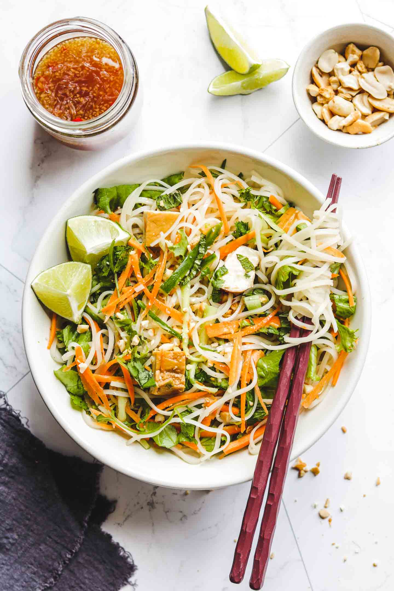

Vietnamese Rice Noodle Salad

The perfect healthy salad for a summer day
When it's hot as hell out and you need a refreshing lunch, make this a meal by topping it with some tofu. This is a delicious vegan version of a Vietnamese bun salad.
Ingredients
- 1 package maifun or thin rice noodles
- 1/2 head of lettuce, chopped
- 2 medium carrots, cut into matchsticks
- 1 cucumber, peeled and cut into matchsticks
- 1 cup thinly sliced fresh mint leaves
- 1 cup thinly sliced fresh basil leaves
- 1 cup chopped cilanto leaves
- 1 cup sliced green onions
- Toasted seasame dressing with 1 clove minced garlic
- 1/2 cup salted, roasted peanuts, finely chopped
- Lime wedges, for serving
Steps
- Cook the noodles according to the package directions. When they are done, drain the noodles and run them under cold water until they are cool to the touch. Set aside.
- While all that is going down, you should get all your veggies and herbs ready and make your dressing.
- To serve, pile a large mound of noodles in the center of each plate. Arrange the lettuce, veggies, and herbs around the mound while leaving a good amount of the noddles exposed. Drizzle the dressing on both the noodles and lightly around the vegetables and herbs, then sprinkle the peanuts all over that deliciousness. Serve with lime wedges.